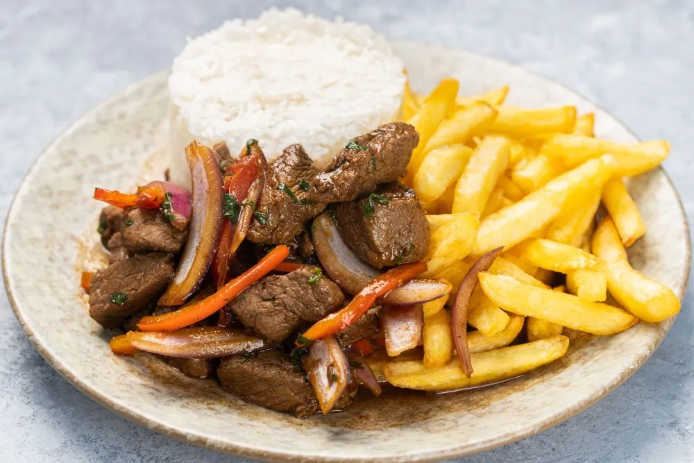

Todo lo que necesitas saber sobre la comida peruana
Publicado el 6 de setiembre de 2024 por ElBuenSabor
Todo restaurante peruano se caracteriza por contar con deliciosos platillos culinarios.
La tradicional cocina peruana se puede dividir geográficamente en tres regiones: costa,
sierra y selva. Sabiendo el impacto internacional que posee nuestra comida, en el siguiente
artículo te comentaremos todo lo que necesitas saber sobre esta.
Leer más
Las siete mejores sopas peruanas para vencer este invierno
Publicado el 6 de setiembre de 2024 por ElBuenSabor
Siendo así, no hay nada que te haga sentir más a gusto como un plato de esta delicia peruana,
sobre todo en invierno. Por tal motivo, a continuación encontrarás una serie de siete sopas que
puedes disfrutar para combatir los días fríos de esta estación.
Leer más
La gastronomía peruana es una de las más diversas y sabrosas del mundo
Publicado el 6 de setiembre de 2024 por ElBuenSabor
La comida peruana es una de las más diversas y sabrosas del mundo, y ha ganado reconocimiento
a nivel internacional por su variedad de ingredientes, sabores y técnicas culinarias. La cocina
peruana es el resultado de una fusión de culturas indígenas, africanas y europeas, que ha
evolucionado a lo largo del tiempo y se ha adaptado a las diversas regiones y climas del país.
Leer más
¿Por qué se come tanto pescado en Perú?
Publicado el 6 de setiembre de 2024 por ElBuenSabor
Perú es conocido por su rica gastronomía y en particular por su delicioso pescado.
Muchos turistas visitan el país para probar los platos de pescado fresco y disfrutar
de la cultura culinaria local. Pero, ¿por qué se come tanto pescado en Perú?
Leer más
Comida criolla: ¿Cómo se prepara la carapulcra?
Publicado el 6 de setiembre de 2024 por ElBuenSabor
La historia de nuestro país se cuenta también a través de nuestra comida. La carapulcra es
un plato criollo que nos remonta a la época colonial, e incluso mucho antes. Este plato es
el favorito para las fechas especiales, celebraciones familiares o los feriados.
Leer más
Todo lo que debes saber sobre el ceviche peruano
Publicado el 6 de setiembre de 2024 por ElBuenSabor

El ceviche es un platillo que, a menudo, se suele encontrar en la carta de todo restaurante
peruano. Siendo uno de las delicias más famosas de Perú, su popularidad y exquisita mezcla
de sabores ha logrado que países como Ecuador, Chile, México y Colombia también lo disfruten.
Leer más
9 bebidas peruanas que deberías probar
Publicado el 6 de setiembre de 2024 por ElBuenSabor
Todo restaurante peruano se caracteriza por contar con deliciosas bebidas,
tanto alcohólicas como sin alcohol. Por lo general, suelen acompañar los platillos
propios de la gastronomía de nuestro país. Asimismo, se caracterizan por sus distintivos
sabores e ingredientes, los cuales les otorgaron popularidad tanto en Perú como en el extranjero.
Leer más
Conoce los platos peruanos más populares
Publicado el 6 de setiembre de 2024 por ElBuenSabor

La variedad de texturas, sumada a la habilidad que tienen los chefs de hacer que un sabor
contrarreste o profundice otro, ha ocasionado que la gastronomía peruana sea una de las
mejores del mundo.
Leer más
Aprende a preparar unos deliciosos picarones
Publicado el 6 de setiembre de 2024 por ElBuenSabor

Los picarones son una delicia típica de Perú que si se prueban una vez no hay vuelta atrás.
Por su forma circular son parecidos a las rosquillas o donuts, pero su sabor y textura son
muy diferentes y exclusivos de nuestro país.
Leer más
7 razones por las que la comida peruana es considerada la mejor del mundo
Publicado el 6 de setiembre de 2024 por ElBuenSabor
Nuestro querido Perú es considerado por muchos como una de las mejores (si es que no la mejor) gastronomía
de Latinoamérica. Con nuestras tradiciones, fusión de culturas, variedades y frescuras en los ingredientes
es difícil negar tal distinción. Sobre todo, con platos como el ceviche, el lomo saltado o el ají de gallina;
tan únicos y a la vez tan tradicionales.
Leer más
Cómo preparar un pisco sour peruano en casa
Publicado el 6 de setiembre de 2024 por ElBuenSabor

El pisco sour es un cóctel clásico peruano que, posiblemente, hayas visto en la carta de
un restaurante de comida criolla. El nacimiento de este cóctel se remonta a 1920
Leer más
Como comprar ingredientes frescos del mar
Publicado el 6 de setiembre de 2024 por ElBuenSabor
Cuando se trata de ingredientes marinos, la frescura es fundamental. Los pescados y mariscos
frescos tienen un sabor más pronunciado y una textura más tierna, lo que mejora la experiencia
gastronómica.
Leer más